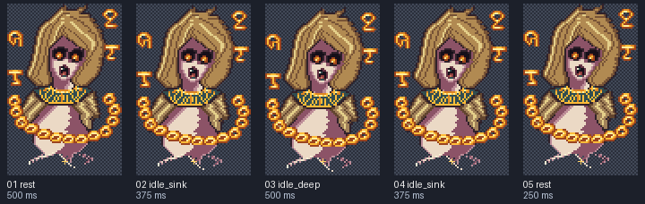
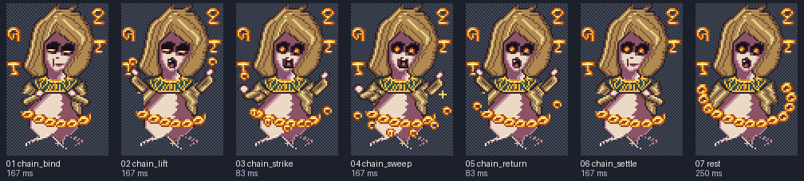
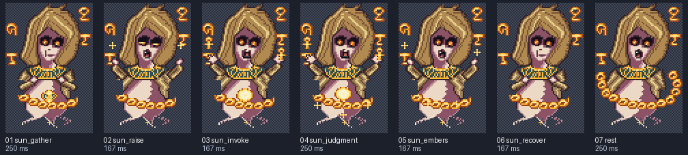
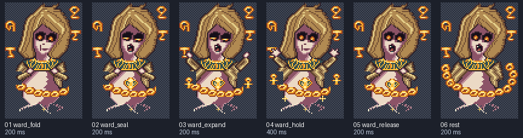
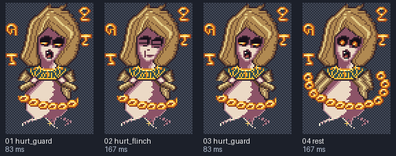
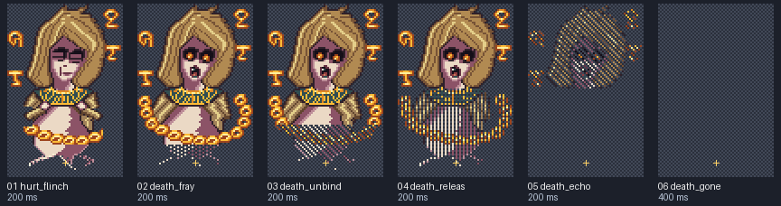

khefret-complete-battle
Local preview. Reload to replay a non-looping clip. Yellow crosses mark the shared pivot on contact sheets.
idle
8 FPS · loop: True
Frames and timing

- rest: 500.00 ms
- idle_sink: 375.00 ms
- idle_deep: 500.00 ms
- idle_sink: 375.00 ms
- rest: 250.00 ms
attack
12 FPS · loop: False
Frames and timing

- chain_bind: 166.67 ms
- chain_lift: 166.67 ms
- chain_strike: 83.33 ms
- chain_sweep: 166.67 ms
- chain_return: 83.33 ms
- chain_settle: 166.67 ms
- rest: 250.00 ms
solar_judgment
12 FPS · loop: False
Frames and timing

- sun_gather: 250.00 ms
- sun_raise: 166.67 ms
- sun_invoke: 166.67 ms
- sun_judgment: 250.00 ms
- sun_embers: 166.67 ms
- sun_recover: 166.67 ms
- rest: 250.00 ms
scarab_ward
10 FPS · loop: False
Frames and timing

- ward_fold: 200.00 ms
- ward_seal: 200.00 ms
- ward_expand: 200.00 ms
- ward_hold: 400.00 ms
- ward_release: 200.00 ms
- rest: 200.00 ms
hurt
12 FPS · loop: False
Frames and timing

- hurt_guard: 83.33 ms
- hurt_flinch: 166.67 ms
- hurt_guard: 83.33 ms
- rest: 166.67 ms
death
10 FPS · loop: False
Frames and timing

- hurt_flinch: 200.00 ms
- death_fray: 200.00 ms
- death_unbind: 200.00 ms
- death_release: 200.00 ms
- death_echo: 200.00 ms
- death_gone: 400.00 ms